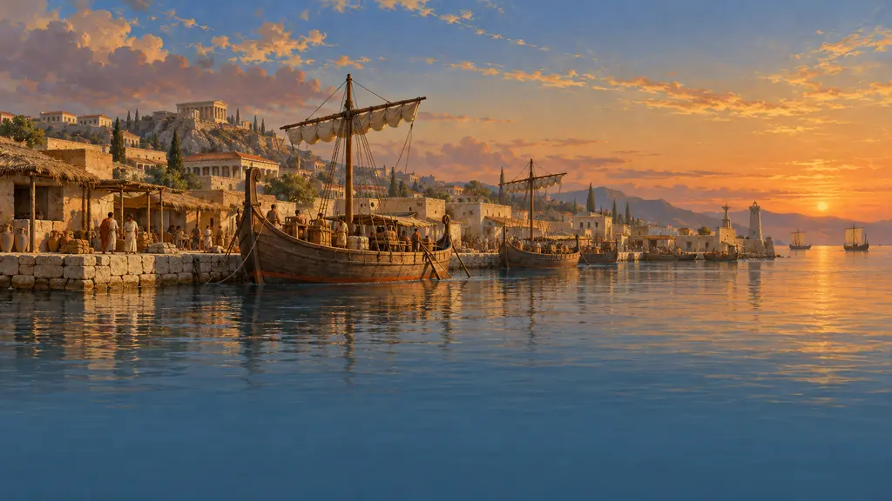
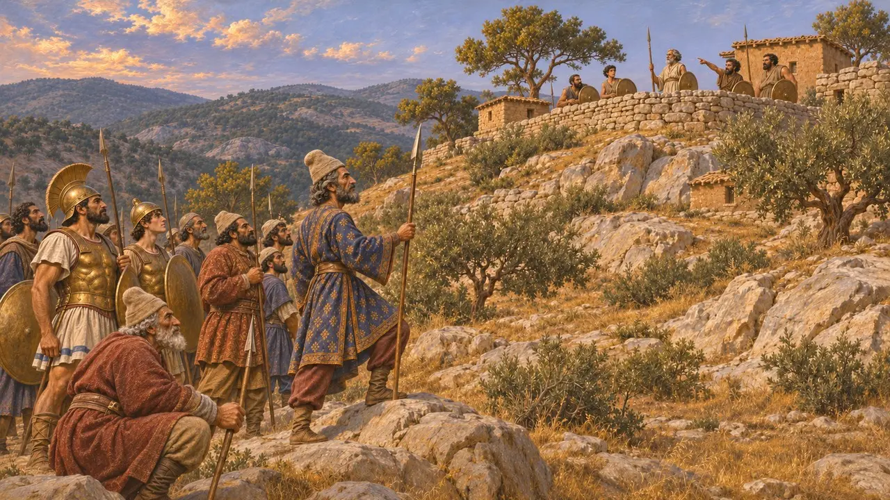
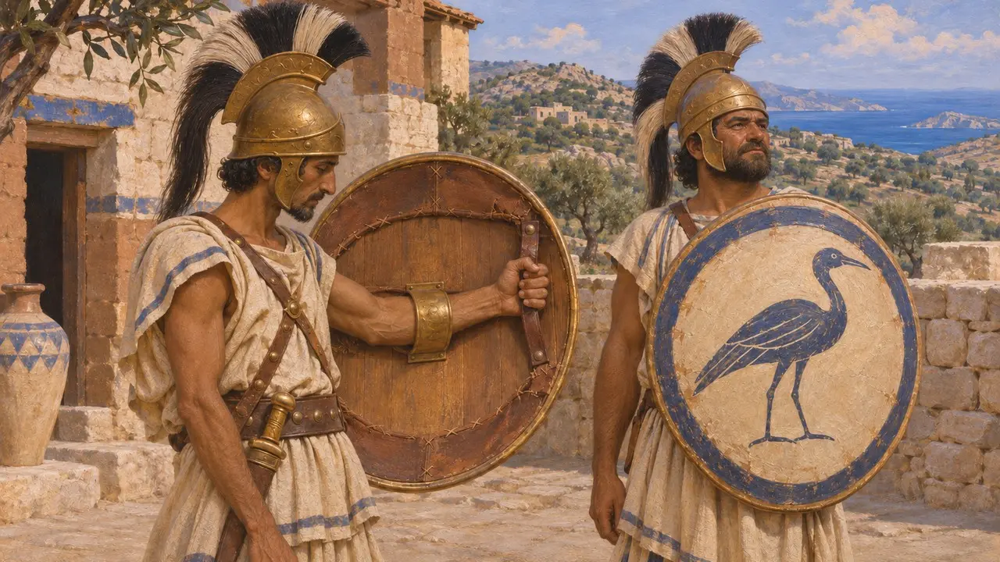
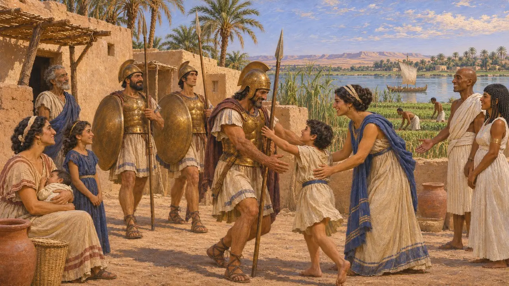
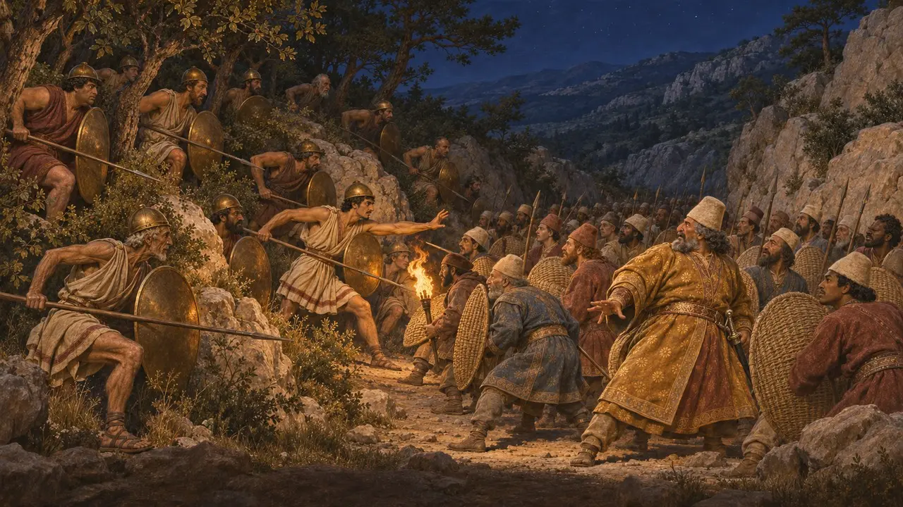
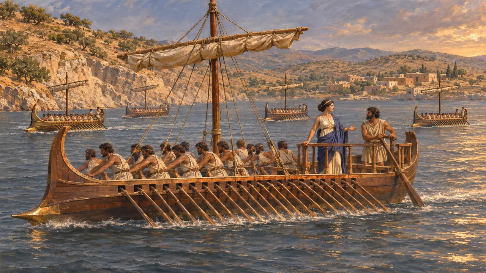

Caria
The hill country of south-west Anatolia, conquered by Harpagus about 545 BCE, which rose with Ionia in 497
Caria was the rugged south-western corner of Anatolia, south of the Maeander river, with Greek towns such as Halicarnassus on its coast. Its people spoke their own language and served abroad as soldiers. Harpagus brought it under Cyrus about 545, and in 497 it joined the Ionian revolt and fought the Persians harder than any other rebel land.
游戏中： The Sardis Burns level's second act tells how the revolt spread to Caria. Carian mercenaries fight in the game's armies, and the Carians have their flag among the nations.

The conquest by Harpagus
古代记述After Sardis fell, Herodotus says, Cyrus left Harpagus to finish the conquest of the western coast. Harpagus took Caria with the help of Ionian levies. The Carians, he says, did little to resist, except the people of Pedasus, who held out on a hill for a time.
Herodotus 1.171, 1.175

Crests and shield handles
古代记述Herodotus says the Greeks learned three things from the Carians: to put crests on helmets, to paint devices on shields and to fit shields with handles. He reports that the Carians said they had always lived on the mainland, while the Cretans said they had come from the islands.
Herodotus 1.171

Soldiers for hire
古代记述Carians and Ionians, the "bronze men" of an oracle, helped Psammetichus I win Egypt in the 7th century, and he settled them in camps near the Nile. Inscriptions in the Carian script found in Egypt, at Saqqara and elsewhere, confirm Carian soldiers and their families living there.
Herodotus 2.152, 2.154; Carian inscriptions from Saqqara

The revolt of 497
古代记述When the Carians joined the revolt, Herodotus says, they met the Persians at the river Marsyas and were beaten, then beaten again at the grove of Zeus of Armies at Labraunda. They then ambushed a Persian army by night on the road to Pedasus and destroyed it with its generals.
Herodotus 5.117-121

Artemisia's ships
古代记述In 480 the Carian queen Artemisia, ruling Halicarnassus, Cos, Nisyros and Calydna, led five ships in Xerxes' fleet. Herodotus, himself from Halicarnassus, ranks her squadron second only to the ships of Sidon and makes her the wisest of the King's advisers.
Herodotus 7.99
来源
- Herodotus 1.171-175
- Herodotus 2.152-154
- Herodotus 5.117-121
- Herodotus 7.99
- O. Masson, Carian Inscriptions from North Saqqara and Buhen, 1978